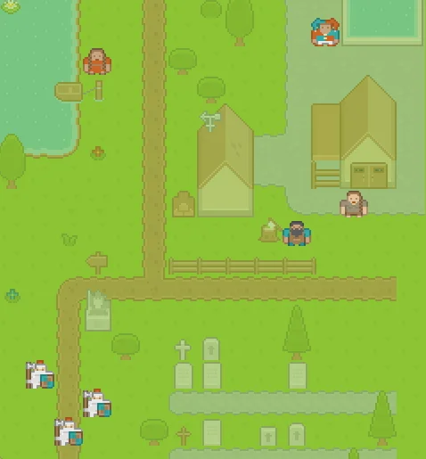
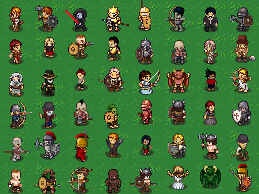
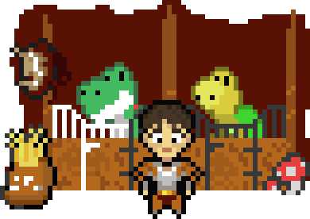

Гром: голос, персонаж, награды и челленджи
Вывод: Гром живёт в боте @mentorbott_bot, ключ я проверил, он рабочий. Советую начать с пути A и сразу брать Health Auto Export: тогда Гром сам видит шаги, сон и тренировки и без твоих отметок начисляет монеты или ругает. Перед стартом нужны пять ответов: номер голоса, судьба второго бота тренера, путь персонажа, свои награды и челленджи на первую неделю.
1. Гром: что принято, голос и как говорит
Что принято с твоих слов
| Вопрос | Решение |
|---|---|
| Имя и характер | Гром, тренер по боксу. Жёстко и с матом. Бьёт по делу и по сливу, но не по тебе как человеку |
| Один бот или два | Один: Гром видит еду, Ева остаётся чистой |
| Вечерняя отметка | 23:00 НСК (21:00 МСК) |
| Ключ бота | @mentorbott_bot, проверен запросом getMe. Лежит в закрытой папке на маке, в код и git не попадёт |
| День разбора недели | Ответа не было. Ставлю воскресенье, 18:00 НСК, суббота остаётся выходной. Поменяешь одним словом |
Голос: 10 вариантов
Все читают одну и ту же реплику. Голосом Гром будет присылать вечерний разнос в 23:00 и вызовы на челлендж, а остальное пишет текстом.
Так, слушай сюда. Вчера две задачи слил. Отговорки мне нахуй не нужны. Что помешало и когда делаешь? Время назови. Сделаешь – скажу: красавчик, по делу. Сольёшь ещё раз – персонаж получит по ебалу, и это на тебе. Всё, работать, блядь.
- Цена. Microsoft (5–10) бесплатно и без срока. HeyGen (1–4) бесплатен до 30.11.2026, потом около 0,01 $ за реплику.
- Акцент. У всех, кроме Дмитрия, родной язык не русский, поэтому послушай ударения и мат. Сам я записи прослушать не могу. Движок мог проглотить или исказить мат, проверь на слух.
- Уэстона и Мередит нет специально. Уэстон читает твои отчёты, Мередит – голос Евы. Гром не должен звучать как они.
- Если ни один не зашёл. Голоса ElevenLabs через Segmind говорят по-русски без акцента и с хрипотцой. Это платно, около 0,03 $ за такую реплику. Скажешь «да» – запишу ещё 4 варианта, всего примерно 0,15 $.
Как Гром разговаривает
| Когда | Что пишет |
|---|---|
| Утро, 8:00 | «Подъём. Сегодня зелёная: КП Минску. До обеда. Не размазывай.» |
| Задача сделана | «Принято. +50. Вот так и надо, без соплей.» |
| Задача просрочена | «Срок был в 15:00. Сейчас 17:40. Что помешало и когда делаешь? Время.» Кнопки: сегодня до 20:00 · завтра утром · снимаю задачу |
| 23:00, отметки нет | Голосовое: «Ты где, блядь? День не закрыт. Пять минут – отметь, что сделал. Не отметишь – минус здоровье.» |
| Еда с перебором | «Плюс 600 к норме. Ну и нахуя? Завтра дорожка 40 минут, без обсуждений.» |
| Суббота | Молчит весь день. Одно сообщение утром: «Выходной. Отдыхай нормально, это тоже работа.» |
| Нокаут (здоровье 0) | «Лежишь. Минус треть монет. Вещи при тебе. Встаём: одна задача сегодня – любая, но до конца.» |
| Серия 7 дней | «Неделя без слива. Уважаю. Забирай сундук.» |
Правило характера: мат летит в дело и в слив («нахуя», «слил»), но не в тебя («ты никто» и подобного не будет). Так держится жёсткость, а Гром не превращается в того, кого хочется заблокировать.
2. Путь персонажа: A, B или C
Сначала главное. Игра во всех путях одна и та же: монеты, здоровье, опыт, магазин и челленджи живут на сервере и не зависят от рисунка. Пути различаются только тем, как нарисован персонаж и где ты с ним играешь. Поэтому A потом можно перевести в B, не переделывая игру. C – другая история: там игра чужая.

A. Маленький пиксельный герой (советую)
20–30 ч · графика Kenney, бесплатная навсегда
- Герой 16×16 точек, как в старых играх, на картинке выше – готовые персонажи Kenney.
- Помещается в виджет Telegram (лимит 4 КБ), поэтому будет виден прямо в чате, когда Telegram откроет виджеты нашему боту.
- Шмот надевается поверх: шлем, плащ, меч, щит, корона. Так уже работает в демо.
- Минус: маленький, без анимации ходьбы.

B. Большой герой с анимацией
30–45 ч · генератор LPC, обязателен экран «Авторы»
- Герой 64×64, ходит, бьёт и стреляет. Тысячи вещей: доспехи, причёски, оружие.
- Живёт в Mini App – это окно на весь экран внутри Telegram, открывается кнопкой.
- В чат-виджет большой не влезет, там остаётся маленький из пути A.
- Минус: дольше, и у каждой картинки своя лицензия, авторов надо перечислять.

C. Готовая игра Habitica
15–25 ч · картинка Habitica, только некоммерческое
- Играешь в чужом приложении Habitica. Гром только читает оттуда, что ты сделал, и ругается.
- Задачи придётся вести в двух местах: в Habitica и в «Задачах» на маке, или переносить их туда целиком.
- Механику менять нельзя: за смерть Habitica снимает уровень, всё золото и вещь. В исследовании 2019 года такие наказания мешали всем участникам.
- Плюс: быстрее всего и красиво из коробки.
| A | B | C | |
|---|---|---|---|
| Виден прямо в чате | да | маленький, как в A | нет |
| Анимация | моргает, трясётся от урона | ходьба, удар, выстрел | нет |
| Наши правила (суббота, фиолетовая задача, мягкий урон) | да | да | нет |
| Задачи в одном месте | да | да | нет |
| Можно потом отдать клиентам | да | да, с экраном авторов | нет |
| Часы (оценка до работы) | 20–30 | 30–45 | 15–25 |
Совет: A сейчас. Если через месяц играешь и хочется красивее – доделываем B, это ещё 15–20 ч сверху, игра остаётся та же.
3. Health Auto Export: что даст
Без неё Гром слепой: шаги, сон и тренировки с часов он не видит, и всё приходится отмечать кнопками. С ней iPhone сам несколько раз в день отправляет данные из «Здоровья» на наш сервер, и Гром начисляет и ругает без твоих отметок.
| Что приходит с часов | Что с персонажем | Что говорит Гром |
|---|---|---|
| Шаги ≥ 10 000 | +10 монет, засчитывается само | «10 тысяч есть. Норм.» |
| Шаги < 3 000 к 19:00 | Урона нет, только пинок | «Ты сегодня вообще вставал? Дорожка 30 минут.» |
| Тренировка записана часами (зал, дорожка) | +20 монет и опыт, кнопку жать не надо | «Зал засчитан. Без пропусков, так держать.» |
| Сон ≥ 7 ч | +5 здоровья: персонаж восстанавливается | – |
| Сон < 6 ч две ночи подряд | Урона нет, Гром снижает план | «Не геройствуй. Сегодня одна зелёная, вечером спать до 00:00.» |
| Пульс в покое выше обычного 3 дня | Сам предлагает фиолетовую задачу | «Тело просит отдыха. Бери отдых, это приказ.» |
| Расход калорий за день | Норма еды считается по факту, а не по формуле | «Сегодня сжёг больше, можно +200.» |
- Цена: Premium 2 290 ₽ навсегда или 599 ₽ в год (App Store России, 14.11.2026). Basic за 249 ₽ сам отправлять не умеет, он не подходит.
- Бесплатная замена – «Быстрые команды» iOS. Так в плане бота тренера (шаг 6). Минусы: стабильно берут только шаги, иногда задваивают их и не срабатывают на заблокированном телефоне. Сон, пульс и тренировки так не собрать нормально.
- Сначала 5 минут проверки, деньги потом. Huawei Health видит часы GT и синхронизировал сегодня → в «Здоровье» → «Приложения» → Huawei Health запись включена → в «Здоровье» есть вчерашние шаги и сон. Если всё есть – покупаем. Если часы не синхронизируются, Premium бесполезен.
4. Награды и челленджи
Награды в магазине
Сколько примерно зарабатываешь: 2 зелёные (100) + 5 жёлтых (75) + фиолетовая (20) + привычки за 6 дней (около 240) – около 430 монет в неделю, 1 800 в месяц. Цены ниже стоят от этого: мелочь – за день-два, крупное – за месяц и больше.
| Награда (реальная, для тебя) | Монет | Сколько копить |
|---|---|---|
| Кофе в любимом месте | 80 | день |
| Вечер сериала или игр без чувства вины | 150 | 2 дня |
| Читмил: одна еда без подсчёта (не в день взвешивания) | 400 | неделя |
| Массаж или баня | 900 | 2 недели |
| Вещь для зала до 5 000 ₽ | 1 500 | 3–4 недели |
| Второй выходной: день без работы среди недели | 2 000 | месяц |
| Кроссовки или гаджет до 20 000 ₽ | 4 000 | 2 месяца |
| Поездка на выходные | 7 000 | 4 месяца |
Правила: в долг не продаётся. Купил – Гром ставит награду в план, и её надо реально взять, «накопил и не потратил» не считается. Шмот для персонажа – отдельная полка: шлем 80, плащ 120, меч 150, щит 200, корона 500.
Челленджи
Одновременно не больше трёх: одна неделя, один босс месяца, один вызов от Грома. Суббота нигде не считается и серию не рвёт.
| Вид | Как работает | Примеры | Награда |
|---|---|---|---|
| Неделя | Выбираешь в воскресенье на разборе, идёт пн–пт | 10 000 шагов 5 из 5 дней · зал 3 из 3 · без сахара 5 дней · отбой до 00:00 5 ночей · еда записана 5 дней | +100–150 монет. Шаги, зал и сон засчитываются сами с часов |
| Босс месяца | У босса есть здоровье, каждое твоё дело бьёт по нему | Жир: 3 кг = 3 000 здоровья, каждые 100 г минус – удар. Прокрастинатор: 8 зелёных задач за месяц. Диван: 12 тренировок | 1 000 монет и редкая вещь, которой нет в магазине |
| Вызов Грома | Раз в неделю, внезапно, голосом. Кнопки: принять или отказаться | «Сегодня 15 000 шагов» · «Закрой две жёлтые до обеда» · «Дорожка 45 минут вечером» | Принял и сделал – награда ×2. Принял и слил – −10 здоровья. Отказался сразу – без урона, но Гром прокомментирует |
| Серия | Дни подряд, когда день закрыт к 23:00 | 7 · 21 · 66 дней | 7 – сундук, 21 – вещь, 66 – корона и звание «Железный» |
| Ставка | Сам ставишь монеты на неделю | «Ставлю 300, что закрою обе зелёные» | Сделал – ставка ×2. Нет – монеты сгорают |
| Вехи полугода | Твои цели на 6 месяцев режем на вехи, каждая веха – челлендж | Например: «−8 кг к маю» → вехи по 2 кг; «3 новых клиента» → по одному | Веха – 500 монет, финал полугода – большая реальная награда из твоего списка |
Почему так. Ставка и вызов работают на страх потерять: потерять монеты обиднее, чем не получить. Босс превращает долгую цель в видимую полоску. Мягкие правила (не больше трёх, суббота вне игры, отказ без урона) нужны, чтобы игра не стала второй работой. На этом ломалась Habitica.
5. Вопросы и что дальше
| # | Вопрос | Мой совет |
|---|---|---|
| 1 | Голос Грома: номер 1–10 | Сначала 5 (Дмитрий, жёсткий): родной русский, мат без акцента. Если звучит роботом – 1 (Винсент) |
| 2 | Бот тренера @trener_artem_bot уже работает. Как сделать один бот? | Еду переносим в Грома: код тренера уже готов и проверен, он становится частью Грома, а @trener_artem_bot выключаем. Другой вариант – два бота, и Гром читает данные тренера на сервере |
| 3 | Путь персонажа | A сейчас, B потом при желании |
| 4 | Health Auto Export Premium | Да, 2 290 ₽ навсегда, но после 5 минут проверки часов |
| 5 | Твои награды | Впиши выше и пришли |
| 6 | Челленджи на первую неделю | «10 000 шагов 5 из 5» и «зал 3 из 3», а в месяц – босс «Жир» |
Порядок после ответов:
- Гром в @mentorbott_bot: характер, голос, утро и 23:00, задачи из «Задач» на маке, неделя по АСБ.
- Персонаж и магазин (путь A) с твоими наградами.
- Еда: перенос кода тренера в Грома.
- Челленджи, затем данные с часов через Health Auto Export.
Каждый шаг – отдельно, с проверкой и твоим «да».
Что раскрыть: 1 – как Гром берёт задачи из панели на маке, 2 – как перенести бота тренера, ничего не потеряв, 3 – полная экономика монет и цены шмота.